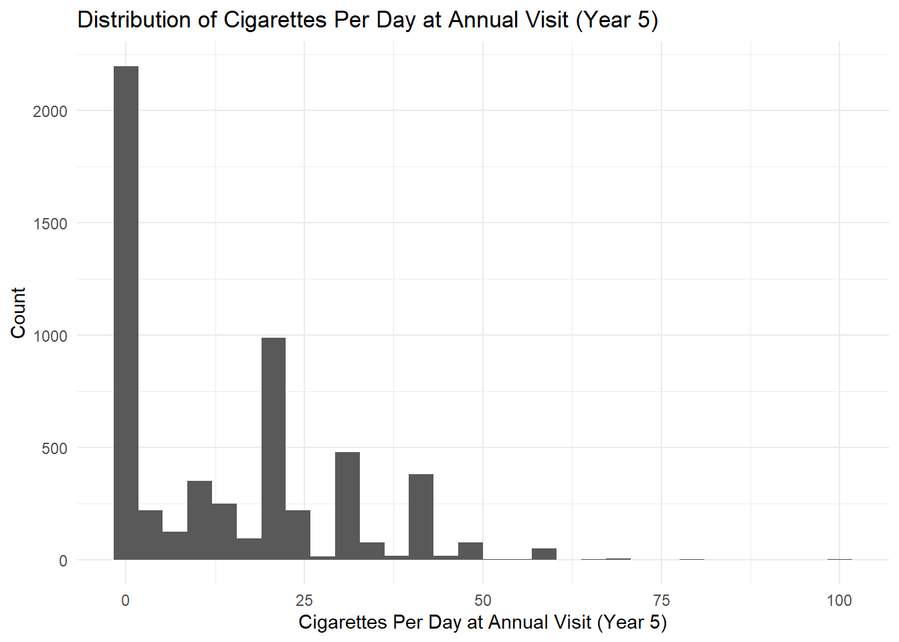

library(tidyverse)
library(flextable) ## for table extraction
library(gtsummary) ## for making tables
library(gt) ## for making tables
library(psych) ## calculate descriptive statistics
library(knitr) ## for making tables easily from
library(janitor) ## clean tablesPoisson Regression
Set-up
1 Section A. Count Data with Fixed Denominator (No Offset Term)
1.1 Data Cleaning
lhs <- lhs %>%
mutate(cigs5 = if_else(AV5CIGS == 0.5, 1.0, AV5CIGS),
Race = case_when(
race == 1 ~ "White",
race == 2 ~ "Black",
race == 3 ~ "Asian",
race == 4 ~ "Native American",
race == 5 ~ "Other"
),
Gender = if_else(
AGENDER == "M", "Males", "Females"
),
Marital = case_when(
marital0 == 1 ~ "Never Married",
marital0 == 2 ~ "Married",
marital0 == 3 ~ "Widowed",
marital0 == 4 ~ "Separated",
marital0 == 5 ~ "Divorced"
),
TreatmentGroup = fct_relevel(alphagroup, "UC")
)1.2 cigs5 table
lhs %>%
select(cigs5) %>%
filter(cigs5 == 0.5) %>%
tibble() %>%
flextable()cigs5 |
|---|
2 Exploratory Data Analysis (EDA)
2.1 Participant Demographic Table
tbl_1 <- lhs %>%
select( Race,
f10cigs,
yeareduc,
age,
bmi,
alphagroup,
Gender,
Marital,
DRINKSBL,
days2ded) %>%
tbl_summary(by = alphagroup,
label = list(
"f10cigs" = "Cigarettes Per Day at Baseline",
"yeareduc" = "Years of Education",
"age" = "Age",
"bmi" = "BMI",
"DRINKSBL" = "Alcoholic Drinks per Week at Baseline",
"days2ded" = "Time (days) from baseline to death")
) %>%
add_overall() %>%
bold_labels()
tbl_1 ## I do not need to make it into a flex table because I am copy-pasting directly from the html to google docs| Characteristic | Overall N = 5,8871 |
SI-A N = 1,9611 |
SI-P N = 1,9621 |
UC N = 1,9641 |
|---|---|---|---|---|
| Race | ||||
| Asian | 8 (0.1%) | 0 (0%) | 7 (0.4%) | 1 (<0.1%) |
| Black | 225 (3.8%) | 76 (3.9%) | 72 (3.7%) | 77 (3.9%) |
| Native American | 7 (0.1%) | 1 (<0.1%) | 1 (<0.1%) | 5 (0.3%) |
| Other | 9 (0.2%) | 3 (0.2%) | 3 (0.2%) | 3 (0.2%) |
| White | 5,638 (96%) | 1,881 (96%) | 1,879 (96%) | 1,878 (96%) |
| Cigarettes Per Day at Baseline | 30 (20, 40) | 30 (20, 40) | 30 (20, 40) | 30 (20, 40) |
| Years of Education | ||||
| 4 | 100 (1.7%) | 37 (1.9%) | 35 (1.8%) | 28 (1.4%) |
| 8 | 28 (0.5%) | 10 (0.5%) | 9 (0.5%) | 9 (0.5%) |
| 10 | 592 (10%) | 194 (9.9%) | 201 (10%) | 197 (10%) |
| 12 | 1,754 (30%) | 587 (30%) | 597 (30%) | 570 (29%) |
| 14 | 2,053 (35%) | 686 (35%) | 679 (35%) | 688 (35%) |
| 16 | 696 (12%) | 234 (12%) | 223 (11%) | 239 (12%) |
| 18 | 316 (5.4%) | 100 (5.1%) | 99 (5.0%) | 117 (6.0%) |
| 20 | 348 (5.9%) | 113 (5.8%) | 119 (6.1%) | 116 (5.9%) |
| Age | 49 (43, 54) | 49 (43, 54) | 49 (43, 54) | 49 (43, 54) |
| BMI | 25.2 (22.7, 27.9) | 25.1 (22.7, 27.9) | 25.4 (22.9, 28.0) | 25.1 (22.6, 27.9) |
| Unknown | 1 | 0 | 0 | 1 |
| Gender | ||||
| Females | 2,185 (37%) | 769 (39%) | 706 (36%) | 710 (36%) |
| Males | 3,702 (63%) | 1,192 (61%) | 1,256 (64%) | 1,254 (64%) |
| Marital | ||||
| Divorced | 1,082 (18%) | 364 (19%) | 333 (17%) | 385 (20%) |
| Married | 4,188 (71%) | 1,394 (71%) | 1,430 (73%) | 1,364 (69%) |
| Never Married | 288 (4.9%) | 87 (4.4%) | 97 (4.9%) | 104 (5.3%) |
| Separated | 152 (2.6%) | 57 (2.9%) | 45 (2.3%) | 50 (2.5%) |
| Widowed | 177 (3.0%) | 59 (3.0%) | 57 (2.9%) | 61 (3.1%) |
| Alcoholic Drinks per Week at Baseline | 2 (0, 6) | 2 (0, 6) | 2 (0, 6) | 2 (0, 6) |
| Time (days) from baseline to death | 1,975 (1,299, 2,740) | 1,651 (1,302, 2,730) | 2,020 (1,320, 2,686) | 2,030 (1,239, 2,785) |
| Unknown | 5,572 | 1,859 | 1,865 | 1,848 |
| 1 n (%); Median (Q1, Q3) | ||||
2.2 cigs5 Histogram
ggplot(lhs, aes(x = cigs5)) +
geom_histogram() +
labs(x = "Cigarettes Per Day at Annual Visit (Year 5)",
y = "Count",
title = "Distribution of Cigarettes Per Day at Annual Visit (Year 5)") +
theme_minimal()
2.3 cigs5 Descriptive Statistics
describe(lhs$cigs5) vars n mean sd median trimmed mad min max range skew kurtosis se
X1 1 5555 13.93 14.75 10 11.94 14.83 0 100 100 0.86 0.18 0.2describe(lhs$cigs5,
IQR = TRUE) %>%
as.data.frame() %>%
select(n, mean, median, IQR, sd, min, max, skew, kurtosis) %>%
flextable() %>%
colformat_double(digits = 2) %>%
theme_booktabs() %>%
autofit() %>%
bold(part = "header") %>%
set_header_labels(
Variable = "Variable",
n = "N",
mean = "Mean",
median = "Median",
sd = "Std. Dev.",
min = "Min",
max = "Max",
skew = "Skew",
kurtosis = "Kurtosis"
)N | Mean | Median | IQR | Std. Dev. | Min | Max | Skew | Kurtosis |
|---|---|---|---|---|---|---|---|---|
5,555.00 | 13.93 | 10.00 | 20.00 | 14.75 | 0.00 | 100.00 | 0.86 | 0.18 |
3 Model 1: Effect of Treatment Group
3.1 Poisson Regression Model
trt_group_cigs5_model <- glm(cigs5 ~ TreatmentGroup,
data = lhs,
family = poisson(link = "log"))
trt_group_cigs5_model
Call: glm(formula = cigs5 ~ TreatmentGroup, family = poisson(link = "log"),
data = lhs)
Coefficients:
(Intercept) TreatmentGroupSI-A TreatmentGroupSI-P
2.8925 -0.4282 -0.4035
Degrees of Freedom: 5554 Total (i.e. Null); 5552 Residual
(332 observations deleted due to missingness)
Null Deviance: 99470
Residual Deviance: 96270 AIC: 112600trt_group_cigs5_model %>% ## this is the exponentiated form
tbl_regression(
intercept = TRUE,
exponentiate = TRUE,
label = list(TreatmentGroup ~ "Treatment Group")
)
trt_group_cigs5_model %>% ## this is the expected log form
tbl_regression(
intercept = TRUE,
exponentiate = FALSE,
label = list(TreatmentGroup ~ "Treatment Group")
)| Characteristic | IRR | 95% CI | p-value |
|---|---|---|---|
| (Intercept) | 18.0 | 17.8, 18.2 | <0.001 |
| Treatment Group | |||
| UC | — | — | |
| SI-A | 0.65 | 0.64, 0.66 | <0.001 |
| SI-P | 0.67 | 0.66, 0.68 | <0.001 |
| Abbreviations: CI = Confidence Interval, IRR = Incidence Rate Ratio | |||
| Characteristic | log(IRR) | 95% CI | p-value |
|---|---|---|---|
| (Intercept) | 2.9 | 2.9, 2.9 | <0.001 |
| Treatment Group | |||
| UC | — | — | |
| SI-A | -0.43 | -0.45, -0.41 | <0.001 |
| SI-P | -0.40 | -0.42, -0.39 | <0.001 |
| Abbreviations: CI = Confidence Interval, IRR = Incidence Rate Ratio | |||
The effect of the SI-P smoking intervention group is 0.67 relative to the usual group at year 5. In other words, the estimated Incidence Rate Ratio (IRR) is 0.67, meaning that the SI-P group smoked at a rate 33% lower than the usual care group. This finding is statistically significant given that our p-value is lower than alpha and the 95% confidence interval does not include 1.0 (p-value < 0.001, CI: 0.66 - 0.68).
3.2 Model Evaluation for Overdispersion Test
To evaluate the poisson regression, we need to review the ratio of the residual deviance to its degree of freedoms. If the model ratio is super super greater than 1 then that is a sign of overdispersion.
model_ratio <- (trt_group_cigs5_model$deviance
/ trt_group_cigs5_model$df.residual)
model_ratio[1] 17.33978model_ratio > 10[1] TRUE4 Model 2: Effect of Treatment Group, Allowing for Overdispersion
How to deal with overdispersion? - 2 ways
Quasi-Poisson Regression
Negative Binomial Regression
4.1 Quasi-Poisson Regression Model for Overdispersed Data
Use the Quasi-Possion Regression model to handle overdispersion
model1.qp <- glm(cigs5 ~ TreatmentGroup,
data = lhs,
family = quasipoisson(link = "log"))
model1.qp
Call: glm(formula = cigs5 ~ TreatmentGroup, family = quasipoisson(link = "log"),
data = lhs)
Coefficients:
(Intercept) TreatmentGroupSI-A TreatmentGroupSI-P
2.8925 -0.4282 -0.4035
Degrees of Freedom: 5554 Total (i.e. Null); 5552 Residual
(332 observations deleted due to missingness)
Null Deviance: 99470
Residual Deviance: 96270 AIC: NAmodel1.qp %>% ## exponentiated form
tbl_regression(
exponentiate = TRUE,
label = (TreatmentGroup ~ "Treatment Group")
)
model1.qp %>% ## expected log form
tbl_regression(
exponentiate = FALSE,
label = (TreatmentGroup ~ "Treatment Group")
)| Characteristic | IRR | 95% CI | p-value |
|---|---|---|---|
| Treatment Group | |||
| UC | — | — | |
| SI-A | 0.65 | 0.61, 0.70 | <0.001 |
| SI-P | 0.67 | 0.62, 0.71 | <0.001 |
| Abbreviations: CI = Confidence Interval, IRR = Incidence Rate Ratio | |||
| Characteristic | log(IRR) | 95% CI | p-value |
|---|---|---|---|
| Treatment Group | |||
| UC | — | — | |
| SI-A | -0.43 | -0.50, -0.36 | <0.001 |
| SI-P | -0.40 | -0.47, -0.34 | <0.001 |
| Abbreviations: CI = Confidence Interval, IRR = Incidence Rate Ratio | |||
5 Section C. Binary Data Treated as Rates (With an Offset Term)
fh <- fh %>%
mutate(followupYR = followup / 365.25,
CHD = as.factor(if_else(chdfate == 1, "Developed CHD", "No CHD")),
Sex = as.factor(if_else(sex == 1, "Male", "Female")),
Sex_women_ref = fct_relevel(Sex, "Female"))5.1 Exploratory Data Analysis (EDA)
I need to have the following information: * Cases of CHD * Follow-up time in person-years * CHD Incidence Rate per 100 person-years
fh_ir_tbl <- fh %>%
select(CHD, Sex, followupYR) %>%
group_by(Sex) %>%
summarize(
CHD_cases = sum(CHD == "Developed CHD"),
ft_py = sum(followupYR),
CHD_IR = ((CHD_cases / ft_py)*100) ## CH Incidence rate calculation
) %>%
gt() %>% ## convert into gt() table
tab_header(
title = "Coronary Heart Disease Incidence Metrics") %>%
cols_label(
CHD_cases = "Total Cases",
ft_py = "Person-Years",
CHD_IR = "Incidence Rate per 100 person-years"
) %>%
fmt_number( ## format Incidence Ratio
columns = c(CHD_IR),
decimals = 2
) %>%
fmt_number( ## format person-years
columns = ft_py,
decimals = 0
)
fh_ir_tbl| Coronary Heart Disease Incidence Metrics | |||
| Sex | Total Cases | Person-Years | Incidence Rate per 100 person-years |
|---|---|---|---|
| Female | 650 | 61,451 | 1.06 |
| Male | 823 | 42,259 | 1.95 |
6 Model 3: Effect of Sex
Offset Term Note: In the context of Poisson regression, the offset variable will always be the time variable (e.g follow-up). * An offset term is needed to account for the different variations in follow-up time (e.g 10 years follow-up vs 1-year; the Poisson model helps distinguish who’s more at risk)
6.1 Poisson Regression Model: Sex on Incidence Rate
Super Important Interpretation Note: When writing the fitted equation, use the log values. And, when interpreting the values use the exponentiated form.
Women are the reference group.
model_3 <- glm(chdfate ~ Sex_women_ref,
data = fh,
family = poisson(link = "log"))
model_3
Call: glm(formula = chdfate ~ Sex_women_ref, family = poisson(link = "log"),
data = fh)
Coefficients:
(Intercept) Sex_women_refMale
-1.4053 0.4932
Degrees of Freedom: 4698 Total (i.e. Null); 4697 Residual
Null Deviance: 3418
Residual Deviance: 3328 AIC: 6278model_3 %>% ## Exponentiated Form
tbl_regression(
intercept = TRUE,
exponentiate = TRUE,
label = list(Sex_women_ref ~ "Sex"))
model_3 %>% ## Log Form
tbl_regression(
intercept = TRUE,
exponentiate = FALSE,
label = list(Sex_women_ref ~ "Sex"))| Characteristic | IRR | 95% CI | p-value |
|---|---|---|---|
| (Intercept) | 0.25 | 0.23, 0.26 | <0.001 |
| Sex | |||
| Female | — | — | |
| Male | 1.64 | 1.48, 1.82 | <0.001 |
| Abbreviations: CI = Confidence Interval, IRR = Incidence Rate Ratio | |||
| Characteristic | log(IRR) | 95% CI | p-value |
|---|---|---|---|
| (Intercept) | -1.4 | -1.5, -1.3 | <0.001 |
| Sex | |||
| Female | — | — | |
| Male | 0.49 | 0.39, 0.60 | <0.001 |
| Abbreviations: CI = Confidence Interval, IRR = Incidence Rate Ratio | |||
7 Notes / Summary:
- When writing the fitted equation, use the log values.
- We log the outcome to account for variations in follow-up time.
- When interpreting the values use the exponentiated form.
- We use the exponent form bc it’s easier to interpret rather than saying “The male sex increases CHD incidence log-rate by XYZ”
- And, make sure to subtract for the interpretation:
- Do 1.0 - exponentiated value <– If exponentiated value is less than 1
- Do exponentiated value - 1 <– if exponentiated value is greater than 1
- The offset term is only needed if we are SPECIFICALLY looking at the RATE.
- If it is a count, do not include the log(follow-up) in the fitted equation
- How to determine if something is statistically significant? - 2 criteria
- p-value < alpha
- (alpha is usually 0.05 or 0.001)
- Confidence Interval (CI) does not include 1.0
- 1.0 is the null hyp
- p-value < alpha
- Model evaluation for overdispersion test
- What is overdispersion?
- To evaluate the poisson regression, we need to review the ratio of the residual deviance to its degree of freedoms. If the model ratio is super super greater than 1 then that is a sign of overdispersion
- Section 3.2
- Then use either Quasi-Poisson Regression or Negative Binomial Regression to account for overdispersion.
- What is overdispersion?
- Key Examples
- Question: Provide an answer to the research question for this section: What is the effect of sex on coronary heart disease (CHD) incidence rate? That is, describe the magnitude and direction of the effect AND its statistical significance in the context of this problem. Use evidence from the previous questions to support your answer.
- Answer: In terms of sex, males have a 64% higher CHD incidence rate than females while holding all else constant (IRR = 1.64). This is statistically significant given that p-value is less than alpha and the 95% confidence interval does not contain 1.0 (p-value < 0.001, CI: 1.48 to 1.82).
- Table 7
8 .qmd Notes
code chunk tips
Use “fig-” or “tbl-” to explicitly tell R this chunk generates a figure or table.
- You can use the “tbl/fig-caption” argument in R to then name the table or figure in the html render.
References
Use {#sec-xyz…} next to a header to create a reference
Then use “?@sec-xyz” to create a link to whichever header you did that to.
- On html, there will be a question mark because R thinks this is a real link. Ignore that.
Generating tables
Use the tbl_regression() function from the gtsummary() package to generate really good looking tables in the html render
Make sure to specify the “intercept = TRUE” argument to include the intercept in the output.
See Section 4.1 as an example
Use the tidy() function from the broom package to automatically turn model outputs into data frames
- Sadly I do not have an example of that in this hw
Use a callout block to make hidden notes for coding
- The syntax is “::: {.hidden} blah blah blah :::”